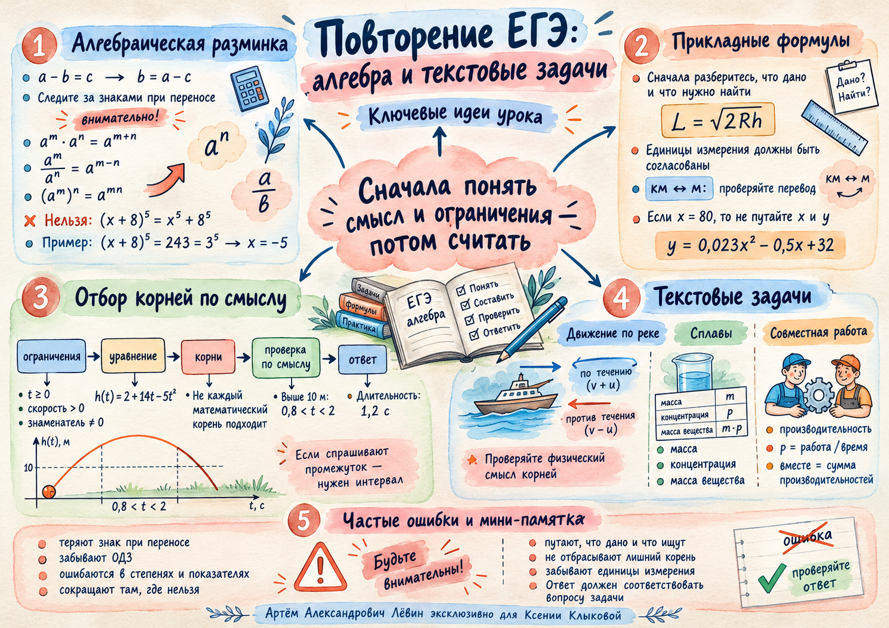

Профильный ЕГЭ · занятие 09.10.2026
Сначала смысл, потом вычисления
Повторение алгебры, прикладных формул и текстовых задач. Главный навык урока — правильно отбирать корни и отвечать именно на вопрос задачи.
Алгебраическая разминка
Знаки, степени и подстановка
Как восстановить неизвестное вычитаемое
В равенстве a − b = c величина b = a − c. Переносите члены уравнения, внимательно следя за знаками.
Степени: три опорных правила
В уравнении (x + 8)⁵ = 243 = 3⁵ сравниваем основания: x = −5. Пятая степень нечётная, поэтому этот переход равносилен.
Вычисляя дробь 2(3x⁷)²x⁶ / (9x²⁰), возводим в квадрат также коэффициент 3 и получаем 2 при x ≠ 0.
Подстановка и общий множитель
При a = 3b дробь (a + 9b + 16)/(a + 3b + 8) превращается в 4(3b + 4)/[2(3b + 4)] = 2.
Прикладные формулы
Обозначения и единицы измерения
Расстояние до горизонта
В формуле L = √(2Rh) подставляем величины в согласованных единицах. Если L = 16 км, R = 6400 км, то:
Что дано, а что требуется найти?
Если y = 0,023x² − 0,5x + 32 и по условию x = 80, подставляйте 80 вместо x. Получается y = 139,2.
В текстовой задаче рисунок может отвлекать. Сначала расшифруйте обозначения переменных, затем приступайте к вычислениям.
Отбор корней по смыслу
Время, интервал и физические ограничения
Мяч выше 10 метров
Высота мяча (в метрах) зависит от времени t (в секундах):
Решая h(t) > 10, получаем 5t² − 14t + 8 < 0. Корни граничного уравнения: t₁ = 0,8 с и t₂ = 2 с. Парабола направлена вниз, поэтому мяч выше отметки 10 м между этими моментами.
Проверка корней — обязательный шаг
- Зафиксируйте ОДЗ, положительность скорости, допустимый диапазон времени.
- Решите уравнение и получите математические корни.
- Проверьте каждый корень в исходной модели и ответьте именно на заданный вопрос.
При падении камня из покоя s = 5t². Если время падения до подъёма воды 2 с, а после 1,6 с, подъём воды равен 5(2² − 1,6²) = 7,2 м.
Текстовые задачи
Движение · сплавы · производительность
Движение по реке
Пусть v — собственная скорость лодки, течение равно 1 км/ч. На 255 км против течения лодка тратит на 2 часа больше, чем на 255 км по течению. Обязательно v > 1.
Математические корни ±16. Собственная скорость положительна и превышает скорость течения, поэтому v = 16 км/ч.
Сплавы: сохраняется масса меди
Сплавы 5% и 13% меди; второй тяжелее первого на 9 кг. В смеси 10% меди.
| Сплав | Масса | Доля меди | Масса меди |
|---|---|---|---|
| Первый | x | 0,05 | 0,05x |
| Второй | x + 9 | 0,13 | 0,13(x + 9) |
| Общий | 2x + 9 | 0,10 | 0,10(2x + 9) |
Отсюда x = 13,5 кг, масса общего сплава 36 кг. Наиболее надёжный ориентир — сохранение массы растворённого вещества.
Совместная работа
Двое рабочих делают заказ вместе за 2 дня. Первый выполняет за день столько, сколько второй за два дня, поэтому его производительность вдвое выше.
Первый выполнит весь заказ самостоятельно за 3 дня. За одну работу принимаем целый заказ, а совместные производительности складываем.
Закрепление
Путь А · 10 заданий из пособия
Решите задания в тетради, не подглядывая в ответы. В прикладных задачах обозначайте переменные, записывайте ограничения, указывайте единицы измерения.
- Решите: 35 − 3x = 8.
- Решите: (x + 4)⁵ = 32.
- Упростите при x ≠ 0: (2x⁴)² · 3x⁵ / (6x¹³).
- Найдите значение дроби (a + 4b + 12)/(a + b + 6) при a = 2b, если исходная дробь определена.
- По формуле L = √(2Rh) найдите h в метрах при R = 5000 км, L = 20 км.
- Высота мяча h(t) = 2 + 12t − 4t². Сколько секунд мяч находится строго выше 10 м? Укажите интервал.
- Камень падал в воду 2 с, а после подъёма воды — 1,6 с. Найдите подъём воды, считая s = 5t².
- Лодка прошла 24 км против течения и 24 км по течению. Течение 1 км/ч; путь против течения занял на 2 ч больше. Найдите собственную скорость.
- Первый сплав содержит 6% меди, второй 14%. Масса второго на 5 кг больше. Общая концентрация 11%. Найдите массу смеси.
- Два рабочих вместе выполняют заказ за 3 дня. Первый за день выполняет вдвое больше работы. За сколько дней он сделает заказ один?
Самопроверка метода
Показать ответы к 10 заданиям
- 9
- −2
- 2 (x ≠ 0)
- 2 (b ≠ −2)
- 40 м
- 1 < t < 2; 1 с
- 7,2 м
- 5 км/ч
- 20 кг
- 4,5 дня
Памятка по уроку
Краткая ментальная карта: алгебраические правила, прикладные формулы, отбор корней и таблицы текстовых задач.

